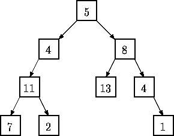

| Trees on the level |
Trees are fundamental in many branches of computer science. Current state-of-the art parallel computers such as Thinking Machines' CM-5 are based on fat trees. Quad- and octal-trees are fundamental to many algorithms in computer graphics.
This problem involves building and traversing binary trees.
Given a sequence of binary trees, you are to write a program that prints a level-order traversal of each tree. In this problem each node of a binary tree contains a positive integer and all binary trees have have fewer than 256 nodes.
In a level-order traversal of a tree, the data in all nodes at a given level are printed in left-to-right order and all nodes at level k are printed before all nodes at level k+1.
For example, a level order traversal of the tree

is: 5, 4, 8, 11, 13, 4, 7, 2, 1.
In this problem a binary tree is specified by a sequence of pairs (n,s) where n is the value at the node whose path from the root is given by the string s. A path is given be a sequence of L's and R's where L indicates a left branch and R indicates a right branch. In the tree diagrammed above, the node containing 13 is specified by (13,RL), and the node containing 2 is specified by (2,LLR). The root node is specified by (5,) where the empty string indicates the path from the root to itself. A binary tree is considered to be completely specified if every node on all root-to-node paths in the tree is given a value exactly once.
The input is a sequence of binary trees specified as described above. Each tree in a sequence consists of several pairs (n,s) as described above separated by whitespace. The last entry in each tree is (). No whitespace appears between left and right parentheses.
All nodes contain a positive integer. Every tree in the input will consist of at least one node and no more than 256 nodes. Input is terminated by end-of-file.
For each completely specified binary tree in the input file, the level order traversal of that tree should be printed. If a tree is not completely specified, i.e., some node in the tree is NOT given a value or a node is given a value more than once, then the string ``not complete'' should be printed.
(11,LL) (7,LLL) (8,R) (5,) (4,L) (13,RL) (2,LLR) (1,RRR) (4,RR) () (3,L) (4,R) ()
5 4 8 11 13 4 7 2 1 not complete